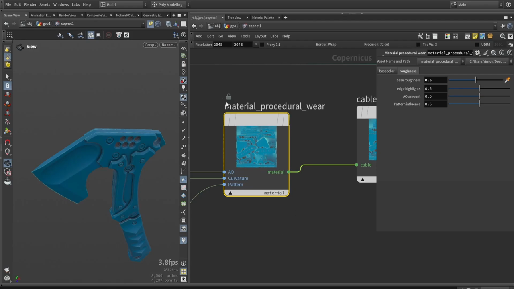

Houdini で斧を作る 9 — ラフネスと HDA のインターフェース
出典: Axe Texturing: full breakdown of COPs texturing in Houdini （Simon Houdini さん / 1:04:35 / 英語）の 38:51〜47:50 部分。 このページは、上記の動画を見ながら自分用にまとめた日本語の学習メモです。作者公式の翻訳ではありません。 前回はマテリアル HDA と Cable 型でした。
この記事で扱うこと
ラフネスマップを作り込み、HDA に使いやすいインターフェースを付けて完成させます。 ここまでできると、あとはコピーして値を変えるだけでマテリアルが増やせるようになります。
1. ラフネスマップを作る
前提として、ラフネスマップの読み方が説明されていました。
値が明るいほどツヤが少なく、 暗いほどツヤが強くなります。
エッジを効かせる
前回焼いた Edge や Curvature のマップを使って、
角の部分だけ質感を変えます。
Blendノードで混ぜます- ブレンド量は 0.5 にしておきます。 「あとで使う人が調整できるように」という意図でした
Screenのブレンドで重ねると、その領域が明るくなります。 つまり反射が弱くなります
エッジが摩耗して光り方が変わる、という表現がこれで作れます。
パターンを混ぜる
ユーザーが差し込むパターンも、ラフネスに効かせられるようにします。
- パターンを前景、それまでの結果を背景にします
Multiplyで混ぜます- ここも 0.5 を初期値にします
これでラフネスに自然なムラが入ります。
2. HDA のインターフェースを作る

ここからが「道具にする」工程です。HDA のパラメータ画面を開いて、 必要なつまみだけを表に出します。
フォルダで整理する
大きく2つのフォルダを作ります。
| フォルダ | 中に出すもの |
|---|---|
| basecolor | 基本の色、そして Pattern / AO / Curvature のサブフォルダ |
| roughness | base roughness / edge highlights / AO amount / Pattern influence |
サブフォルダの順番は、HDA の入力の順番と揃えていました。 Pattern → AO → Curvature の順です。使う人が迷いにくくなります。
各フォルダには、内部ノードのパラメータを引っぱってきます。
- Pattern には
HSV Adjustの hue と value - Curvature には hue / saturation / value
いくつでも出せますが、私はこの2つに絞ります。
出しすぎないという判断が実用的だと思いました。
完成したインターフェース
上の画像が結果です。roughness タブには4つのつまみが並んでいます。
| パラメータ | 初期値 |
|---|---|
base roughness | 0.5 |
edge highlights | 0.5 |
AO amount | 0.5 |
Pattern influence | 0.5 |
すべて 0.5 を初期値にしてあるので、 上げても下げても調整できる状態から始められます。
範囲を固定する
値が想定外の範囲に行かないよう、レンジをロックしておきます。 動画では 0 から 1 に固定していました。
ツールを確定する
Apply→Accept- ツールを保存します
- 右クリックから
Match Current Definitionを選びます
これでツールがロックされ、アイコンに鍵が付きます。使える状態になりました。
3. マテリアルを増やす
あとは HDA をコピーして名前と値を変えるだけです。
動画では最初にハンドル用のプラスチックを作っていました。 青系にして、彩度を少し下げ、暗めにする、といった調整です。
ここまで作ってしまえば、マテリアルを増やすのは つまみを触るだけになります。
上の画像のビューポートには 8,500 プリミティブと表示されています。
モデリング編で PolyReduce の目標にしていた数と同じで、
あのローポリがそのまま使われていることが分かります。
この記事のまとめ
- ラフネスは明るいほどツヤが少なく、暗いほどツヤが強い
- エッジは
Screenで重ねると明るくなり、反射が弱まります - パターンは
Multiplyで混ぜます - 調整用の値はすべて 0.5 を初期値にしておくと、上下どちらにも振れます
- HDA のインターフェースはフォルダで整理し、順番は入力と揃えます
- 出すパラメータは絞ります。全部出す必要はありません
- レンジをロックして、想定外の値が入らないようにします
- 保存して
Match Current Definitionでツールを確定します
次は最終回。作ったマテリアルをマスクで重ね、トライプラナーや汚しを足して書き出します。